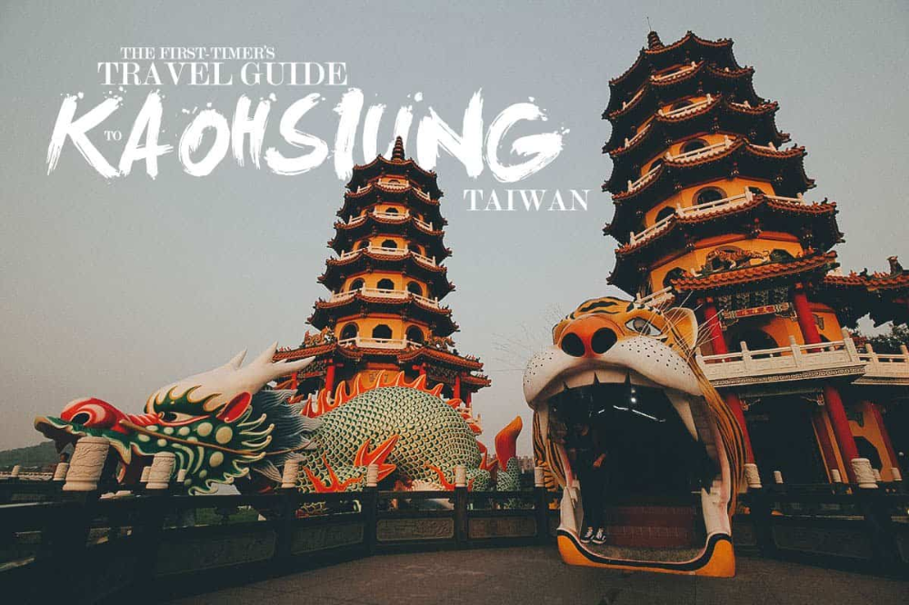

Known as "Taiwan's Maritime Capital," the city has worked hard in recent years to develop its tourism industry, including through beautification of the urban landscape. It is also surrounded by mountains on all sides and is situated in a valley. Kaohsiung is a port city with rivers, harbors and plenty of beaches nearby. It is more laid back with wide open streets and better city planning in my opinion.